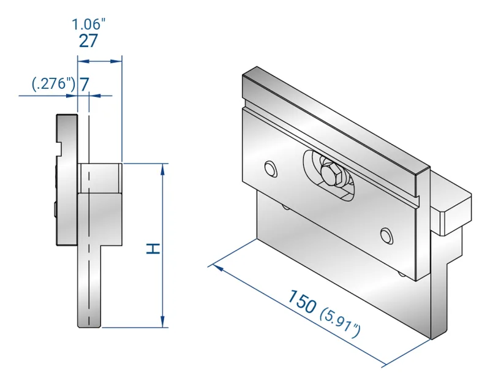

Intermediates and upper adapters
intermediates 4073 – 4411 · adapters 4000 – 4362

1 / 8The intermediate is the holder between the ram and a European-style punch: it carries the clamp and, on the adjustable versions, a wedge that crowns each section so the angle stays true along the bend. Z1 intermediates have a 27 mm (1.06″) body with the bending axis 7 mm from the face; Z2 intermediates a 40 mm (1.57″) body with the axis at 20 mm; the heavy-duty versions are solid CrMo steel. The upper adapters go the other way: they let a press brake with Trumpf / Wila, Beyeler, LVD, Weinbrenner, CBC, EHT, Durmazlar, Darley, Baykal or Colgar clamping run European-style punches — or a European-style beam run Trumpf / Wila punches. The Z1 intermediate for American-style punches is on the American-style tooling page.
- Adjustable intermediates Z1 (H100, H120, H150) and Z2 (H120); heavy-duty CrMo versions rated to 160 t/m (54 US t/ft)
- Fixed intermediates and short extensions, 75 and 150 mm long
- Upper adapters to European-style punches from 12 clamping systems; European → Trumpf / Wila adapter
- Custom-tang upper adapters H59, H67 and H100 (minimum 5 pieces)
- 150 mm (5.9″) long sections unless noted
| Code | Intermediate | Height H | Lengths & weights | Profile | |
|---|---|---|---|---|---|
| 5.91″150 mm | 2.95″75 mm | ||||
| 4221 | Adjustable intermediate Z1 — body 27 mm, axis 7 mm, wedge for crowning | 3.937″ (100 mm) | 7.9 lb3.6 kg | — | — |
| 4222 | Adjustable intermediate Z1, 27 / 7 mm | 4.724″ (120 mm) | 10.1 lb4.6 kg | — | DXF |
| 4223 | Adjustable intermediate Z1, 27 / 7 mm | 5.906″ (150 mm) | 13.2 lb6.0 kg | — | DXF |
| 4224 | Adjustable intermediate | 3.937″ (100 mm) | 1.8 lb0.8 kg | — | DXF |
| 4225 | Adjustable intermediate Z2 — body 40 mm, axis 20 mm | 4.724″ (120 mm) | 11.7 lb5.3 kg | — | — |
| 4073 | Heavy-duty adjustable intermediate, all CrMo steel, body 40 mm, axis 7 mm | 4.724″ (120 mm) | 15.9 lb7.2 kg | — | DXF |
| 4411 | Heavy-duty adjustable intermediate, all CrMo steel, body 40 mm, axis 20 mm — 160 t/m | 4.724″ (120 mm) | 13.4 lb6.1 kg | — | DXF |
| 4282 | Intermediate without wedge (extension), 27 / 7 mm | 3.937″ (100 mm) | 8.4 lb3.8 kg | — | — |
| 4226 | Short intermediate without wedge (extension), 27 / 7 mm | 3.937″ (100 mm) | — | 4.0 lb1.8 kg | — |
| 4227 | Short intermediate without wedge (extension), 27 / 7 mm | 5.906″ (150 mm) | — | 6.4 lb2.9 kg | — |
| 4228 | Short intermediate Z2, 40 / 20 mm, not adjustable | 4.724″ (120 mm) | — | 5.7 lb2.6 kg | — |
| Code | Adapter | Height H | Lengths & weights | Profile |
|---|---|---|---|---|
| 5.91″150 mm | ||||
| 4362 | Amada / European beam → Trumpf / Wila punches | 2.638″ (67 mm) | 8.8 lb4.0 kg | DXF |
| 4361 | Trumpf / Wila extension with safety pins | 3.937″ (100 mm) | ≈ 14.8 lb≈ 6.7 kg | DXF |
| 4191 | Trumpf / Wila beam → Amada / European punches | 3.150″ (80 mm) | 7.9 lb3.6 kg | DXF |
| 4192 | Beyeler type R → Amada / European punches | 2.638″ (67 mm) | 6.6 lb3.0 kg | DXF |
| 4193 | Beyeler type S → Amada / European punches | — | 7.1 lb3.2 kg | — |
| 4214 | Beyeler type RF-A → Amada / European punches | — | 11.0 lb5.0 kg | — |
| 4215 | Weinbrenner → Amada / European punches | — | 10.6 lb4.8 kg | — |
| 4216 | CBC → Amada / European punches | — | 9.0 lb4.1 kg | — |
| 4217 | EHT → Amada / European punches | — | 11.9 lb5.4 kg | — |
| 4218 | Durmazlar → Amada / European punches | — | 5.7 lb2.6 kg | — |
| 4229 | Darley → Amada / European punches | — | 9.9 lb4.5 kg | — |
| 4272 | Baykal → Amada / European punches | — | 7.7 lb3.5 kg | — |
| 4273 | Colgar → Amada / European punches | — | 9.7 lb4.4 kg | — |
| 4143 | LVD (S) → Amada / European punches | 3.150″ (80 mm) | 6.6 lb3.0 kg | — |
| 4144 | LVD (M) → Amada / European punches — minimum 5 pieces | 3.150″ (80 mm) | 6.6 lb3.0 kg | — |
| 4145 | LVD (L) → Amada / European punches — minimum 5 pieces | 3.150″ (80 mm) | 6.6 lb3.0 kg | — |
| 4146 | LVD (XL) → Amada / European punches — minimum 5 pieces | 3.150″ (80 mm) | 6.6 lb3.0 kg | — |
| 4000 | Upper adapter with your machine's tang, H59 — minimum 5 pieces | 2.323″ (59 mm) | 3.3 lb1.5 kg | — |
| 4001 | Upper adapter with your machine's tang, H67 — minimum 5 pieces | 2.638″ (67 mm) | 4.4 lb2.0 kg | — |
| 4002 | Upper adapter with your machine's tang, H100 — minimum 5 pieces | 3.937″ (100 mm) | 7.7 lb3.5 kg | — |
Heights are the working height H of the tool; loads are the maker's maximum in tonnes per metre of tool length, shown as US tons per foot (1 t/m = 0.336 US t/ft) — the tonnage of the bend per foot must stay below it. Lengths: full lengths, sectioned (sect.) sets with horns, and single pieces. Profile: the tool's DXF, drawn in millimetres, for your CNC's tool library. Tools EUROSTAMP has taken out of production are not listed; ask us for them as special tools.